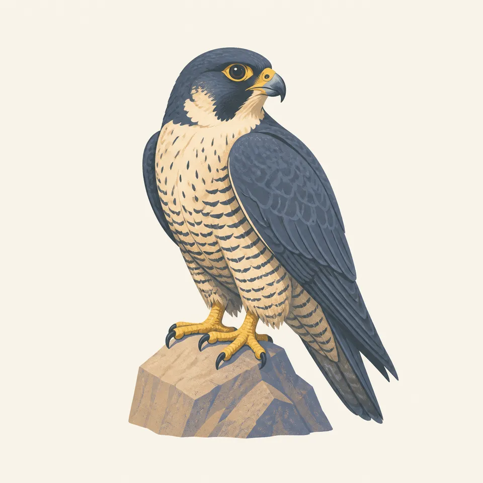
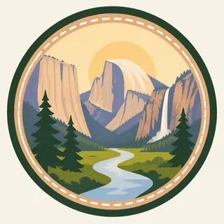

01
El Capitan
A single sheer wall rising with impossible calm, more monolith than mountain, holding the western edge of the valley in shadow and scale.
TrailMark Archive Edition
California | Sierra Nevada
Granite walls hold the morning light, waterfalls speak from unseen heights, and the valley opens slowly like a preserved print pulled from its sleeve.
Archive No. TM-YOS-001
National Park since 1890
Collection Western Parks
Park Overview
Yosemite gathers some of the American West's most recognizable forms into one valley. Sheer granite, spring waterfalls, meadow light, black oak, and pine shadow all meet in the same frame.
The park reaches far beyond Yosemite Valley, but the valley remains its emotional center. It is where scale becomes immediate, where cliffs rise like architecture, and where water turns distance into sound.
TrailMark treats Yosemite as the first archive chapter because it contains the core language every future park page should carry: wonder first, meaningful context second, and a preserved sense of place throughout.
Emotional Thesis
Yosemite Valley does not arrive all at once. It unfolds by degrees: a wall of granite catching pale morning light, water heard before it is seen, distance compressing and then opening again.
The valley floor feels quiet even when it is full of movement. Pine shadow, cold river air, and the sound of falling water give the entire basin the atmosphere of a place preserved rather than merely visited.
Landscape Highlights
01
A single sheer wall rising with impossible calm, more monolith than mountain, holding the western edge of the valley in shadow and scale.
02
Seen at a distance, it feels almost drawn into the skyline: stern, unmistakable, and luminous when the last light moves across its face.
03
In spring it arrives as sound before image, a vertical rush of white water turning cliff and air into a single column of motion.
Wildlife
Yosemite supports black bears, mule deer, coyotes, bobcats, songbirds, raptors, amphibians, and countless smaller species that depend on meadow, river, forest, and cliff habitats.

01
Wildlife should be observed quietly and from a respectful distance.
02
Food storage is part of stewardship here; careless food access can harm both visitors and bears.
03
Dawn and dusk often reveal more movement, but visitors should avoid crowding animals or blocking roads for photographs.
Geology
Yosemite's signature walls are the exposed remains of deep granitic rock, shaped over immense time by uplift, erosion, glaciers, rivers, and freeze-thaw weathering.
01
Glaciers widened and polished the valley, leaving a form that feels carved rather than merely eroded.
02
Domes and cliffs reveal how durable granite responds when pressure, joints, ice, and water work across geologic time.
03
Waterfalls trace hanging valleys and steep drops left by the different depths of glacial carving.
Waterfall thunder, wet granite, and river air cold enough to make the whole valley feel newly awakened.
Heat gathers on the stone by afternoon, the walls appear even taller, and the distance shimmers with a pale mineral haze.
Gold light settles lower in the valley, the crowds thin, and the meadows take on a softer, more reflective quiet.
Blue-white silence, dark pines, and snow-held edges that turn the familiar valley into something almost monastic.
Photography Guidance
Yosemite rewards patience. The most memorable images often come from waiting for scale, weather, shadow, and water to align rather than chasing only the famous viewpoint.
01
Look for soft side light along granite walls and mist near the valley floor.
02
Use waterfall sound and spray as cues for atmosphere, but protect gear near heavy runoff.
03
Watch how the last light moves across Half Dome and the upper walls before the valley floor darkens.
Field Notes
Yosemite does not reveal itself immediately. It expands slowly through scale, silence, and distance, until even the smallest movement of water or light feels monumental.
TrailMark Archive Journal

Badge Story
Granite, waterfall mist, and valley shadow form the first mark in the TrailMark archive. The badge is presented less as an icon and more as a kept piece of park memory.
The circular mark reduces Yosemite to its essential forms: stone, forest, sky, and snow light.
Its restrained palette gives it the feel of a preserved patch or field-journal stamp rather than a modern badge set.
Placed on warm paper with quiet labeling, it reads as a collected artifact from the archive's first completed chapter.
Archive No.001
LocationYosemite Valley
ReleaseFirst Archive Mark
Stewardship / Safety
Yosemite's beauty depends on restraint: staying on durable surfaces, storing food correctly, respecting closures, giving wildlife space, and treating crowded places with patience.
Use marked trails and boardwalks where provided, especially around meadows and wet areas.
Store food and scented items exactly as required; bear safety is visitor safety and wildlife protection.
Check seasonal road, waterfall, smoke, snow, and permit conditions before committing to a plan.
Give other visitors room to experience quiet, especially at overlooks, meadows, and narrow trail sections.
Current conditions, fees, and alerts are on the National Park Service site.
Continue the Archive
The TrailMark collection grows one preserved landscape at a time, each page treated as an artifact rather than a listing.